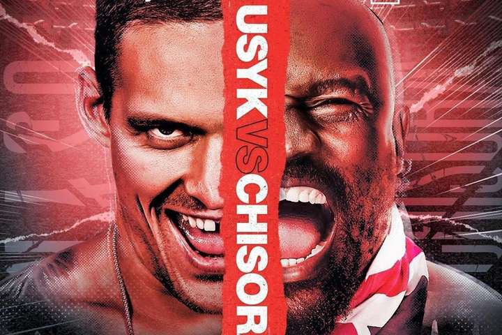
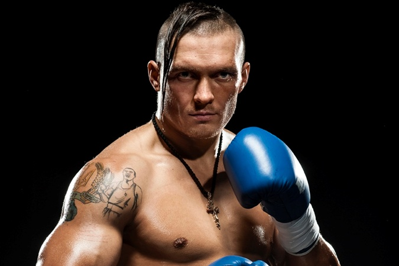
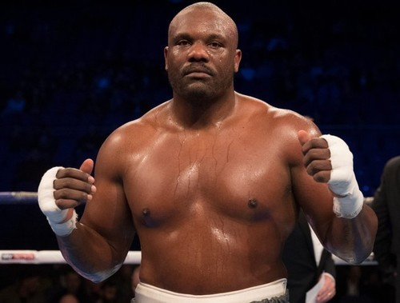
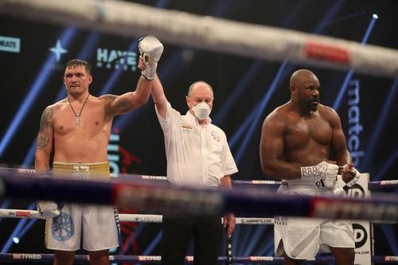

У суботу, 31 жовтня, колишній абсолютний чемпіон світу в крузервейте Олександр Усік проведе свій другий поєдинок у суперважкій вазі.Суперником українця стане відомий британський боксер Дерек Чісора. Бій пройде в Лондоні, на арені Уемблі.
Орієнтовний час початку поєдинку 23:00 за київським часом. Все, що треба знати уболівальникам про онлайн відео трансляцію бою Усік – Чісора.
Завоювавши всі титули в першій важкій вазі, Олександр Усік вирішив підкорювати Королівський дивізіон професійного боксу.
Дебют вийшов досить успішним – маловідомий Чезз Уїзерспун не пройшов з українцем всю дистанцію.
Цілком ймовірно, Усік вже міг би вийти і на чемпіонський поєдинок в новому вазі,
в українця статус обов’язкового претендента за версією Всесвітньої боксерської організації (WBO), але втрутилася пандемія.
В результаті бій з Чісорою кілька разів переносився, та й проведення його в цьому році було під загрозою.
Але, на щастя, всі формальності улагоджені і боксерам ніщо і ніхто не завадить
розділити ринг.
Усік немов катком пройшовся по крузервейту, змітаючи всіх на своєму шляху, проте тепер його чекає дуже непростий опонент і складне випробування.
36-річний Чісора – можливо, найнебезпечніший суперник у кар’єрі Усіка.
По-перше, британець – природжений надважковаговик і значно перевершує українця в антропометрії.
По-друге, Чісора – досвідчений боєць, в активі якого 41 бій на професійному рингу і поєдинки, наприклад, з піковим Віталієм Кличком, Кубратом Пулєвим, Тайсоном Ф’юрі, Ділліаном Уайтом, Девідом Хеєм.
І у всіх у них Чісора виглядати гідно.
По-третє, у Чісори міцне підборіддя і потужний удар, а брудний стиль ведення бою робить його незручним опонентом для будь-якого бійця.
Ну і не будемо забувати про фізичні кондиції і настрої. Для Дерека бій з Усіком – відмінний шанс зірвати великий куш перед виходом на спортивну пенсію.
Олекса́ндр Олекса́ндрович У́сик (нар. 17 січня 1987, Сімферополь) — професійний український боксер. Абсолютний чемпіон світу в першій важкій вазі (версії WBO (2016 — 2019), WBC (2018 — 2019), IBF (2018 — 2019), WBA (Super) (2018 — 2019), The Ring (2018 — т.ч.), олімпійський чемпіон (2012), чемпіон світу (2011), чемпіон Європи (2008), багаторазовий чемпіон України. Заслужений майстер спорту України. Олександр Усик 2017 р. піднявся на першу сходинку рейтингу найкращих боксерів в першій важкій вазі за версією авторитетного боксерського видання «The Ring»[6]. 21 липня 2018 року став абсолютним чемпіоном світу в першій важкій вазі, перемігши осетина Мурата Гассієва, який представляв Росію, у фіналі Всесвітньої боксерської суперсерії WBSS. Олександр — перший українець, який отримав титул абсолютного чемпіона світу[7].
Дерек Чісора (англ. Dereck Chisora, нар. 29 грудня 1983, Зімбабве) — професійний британський боксер-важковаговик. Проживає у Фінчлі, Лондон.
Дерека склалася вдало. Чісора провів близько 20 боїв, завоювавши золото на турнірі Чотирьох Націй і перемігши на 119-му Національному чемпіонаті Аматорської боксерської асоціації Англії в грудні 2005 року У листопаді 2010-го Чісору засудили за напад на свою подругу через знайдені в її телефоні повідомлення від невідомого чоловіка. Чісору засудили до 12 тижнів тюремного ув'язнення з відстрочкою на два роки, штрафу на загальну суму в 2000 фунтів і 150 годин громадських робіт. Любительська кар'єра У Чісори була успішна любительська кар'єра, вигравши золото Чотирьох Націй і виграв в 2005 році титул суперважковаговика в Асоціації любительського боксу Англії.
У Лондоні на «Уемблі Арені» відбувся великий вечір боксу. У головному бою вечора в суперважкій вазі зійшлися екс-чемпіон світу в крузервейті Олександр Усик (17-0, 13 КО) і британський ветеран Дерек Чісора (32-9, 23 КО). Після цієї перемоги Усик став претендентом на титул чемпіона світу за версією WBO. Зараз в активі українця 18 перемог в 18 боях, 13 з яких він завершив нокаутом. У ніч на перше листопада в Лондоні на знаменитому стадіоні "Уемблі" український боксер Олександр Усик в другому бою з суперважкій вазі переміг британця Дерека Чісору одноголосним рішенням суддів. Суддівські записки зафіксували 117: 112, 115: 113 (двічі). За цей бій Олександр поставив собі оцінку 3 з 10, а Дерек Чісора вважає, що саме він виграв поєдинок, оскільки контролював та задавав темп. Український боксер Олександр Усик прокоментував складну перемогу над британцем Дереком Чісорою в бою за статус обов'язкового претендента на чемпіонський пояс WBO в суперважкій вазі. "Хороший бокс був. Це був реальний тест у супертяжах. Чісора - великий, потужний боєць. Мені це подобається. Я очікував, що буде такий бій, навіть, думав, ще більш жорстко все буде. Питання щодо супертяжів? Я не знаю. Яку оцінку собі ставлю з 10 балів? Трійку, так. Мої плани - поїхати додому, відпочити із сім'єю. Тренуватися далі. Я не боксував цілий рік. Я маю намір стати абсолютним чемпіоном світу, не просто чемпіоном світу в супертяжах ", - сказав Усик після бою. Більше читайте тут:
Денисюк Владислав